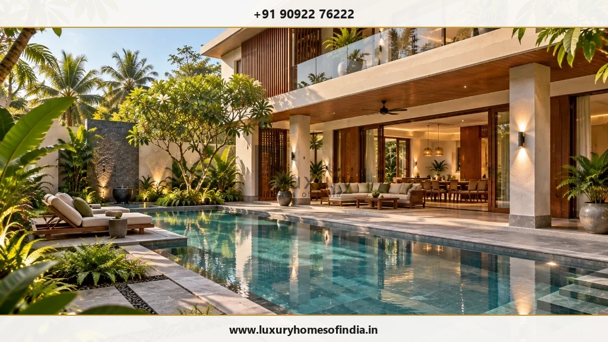
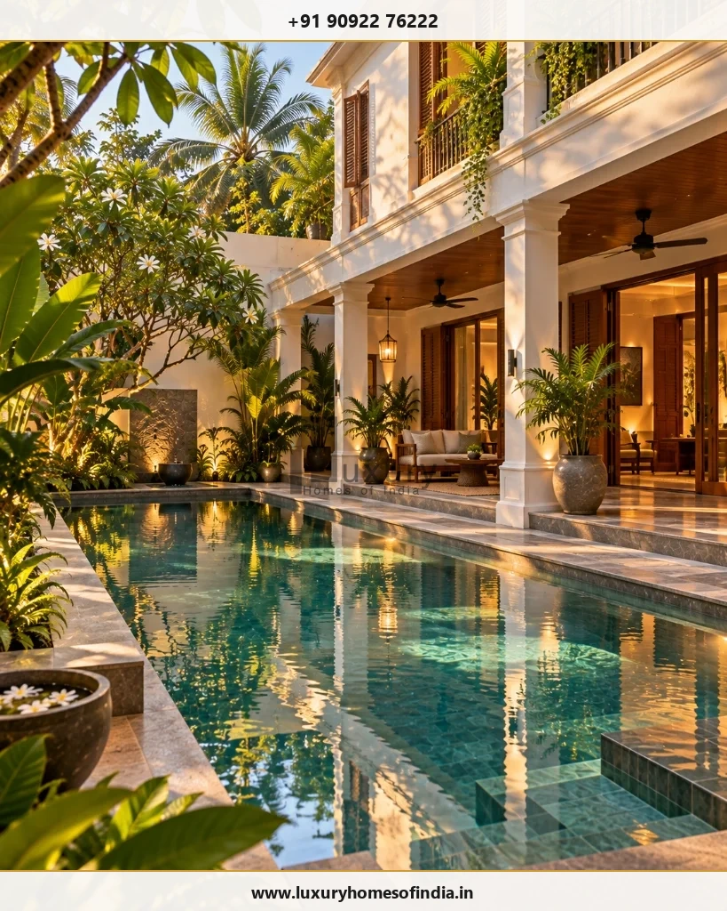
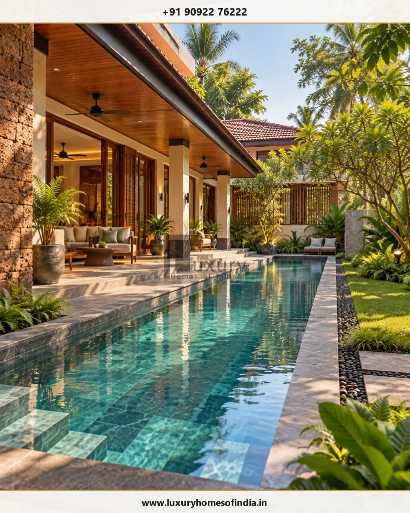

Swimming Pool Construction in Chennai
Plan a private pool around your home, site and lifestyle.
Key Takeaways: Villa Swimming Pool Construction
- Structural Integrity: Monolithic Reinforced Cement Concrete (RCC) shells with crystalline waterproofing are mandatory for coastal soil stability in Chennai.
- Monsoon Overflow Management: Integrated perimeter overflow channels, surge tanks, and high-capacity sumps prevent pool water inundation during heavy rains.
- Water Treatment: Saltwater chlorination combined with glass media filtration delivers chemical-free, skin-friendly water suited for high ambient temperatures.
- Seamless Architectural Flow: Decking materials like non-slip granite or composite teak create safe transitions between outdoor living areas and the pool edge.
A private swimming pool can create space for exercise, relaxation and outdoor living. But a successful pool involves more than choosing its shape or finish.
Its structure, waterproofing, circulation system, surrounding surfaces and access for maintenance all need to be considered alongside the architecture of your home.
Luxury Homes of India (LHI) lists swimming pools, including lap and infinity-edge concepts, among its bespoke residential solutions. If you are planning a swimming pool for a new residence in Chennai, discuss your requirements with LHI to confirm how pool construction can be integrated into your architectural brief.
Discuss Your Private Swimming Pool Project
Connect with Luxury Homes of India architectural team to design a custom pool integrated with your villa layout and structural foundation.

Decide how the pool will be used
Start with the main purpose of the pool. The way you intend to use the water should influence its dimensions, depth profile and relationship to outdoor living areas.
Consider whether the pool is mainly for:
- Daily Exercise: Lap swimming requiring a straight, unobstructed channel of appropriate length.
- Family Relaxation: Shallow play zones, wide entry steps and comfortable seating ledges.
- Outdoor Entertaining: Sunken lounges, poolside pavilions and integrated water features.
- Visual Impact: Infinity edges or glass viewing panels aligned with key indoor sightlines.
Clarifying these priorities early helps ensure the pool suits your household rather than simply filling available ground space.
Integrate the pool with your home's architecture
A pool should feel like a natural extension of the house, not an afterthought placed in a remaining corner of the plot.
Review the following during design development:
Sightlines from main living rooms
Position the pool so water views enhance key interior spaces such as living, dining or family rooms while preserving necessary privacy from adjacent properties.
Indoor-outdoor transitions
Ensure smooth movement between verandas, outdoor seating and the pool deck. Keep walking routes clear and maintain safe separation between wet deck areas and dry living spaces.
Shade and sunlight
Check how sunlight moves across the site throughout the day. Balance sun exposure for swimming with shaded seating areas protected by pergolas, wide eaves or trees.

Technical requirements for pool construction in Chennai
Coastal climatic conditions, soil characteristics and rainfall patterns in Chennai require careful technical planning to ensure long-term durability.
| Pool Type / System | Key Structural & Engineering Considerations |
|---|---|
| Monolithic RCC Shell | Engineered reinforced concrete slab and walls cast in a continuous pour to resist soil pressure and prevent structural cracking. |
| Dual-Layer Waterproofing | Crystalline waterproofing admixtures combined with flexible elastomeric liquid membranes applied before tiling. |
| Skimmer vs Overflow System | Overflow/infinity systems offer continuous water level aesthetics; skimmer systems reduce mechanical plant room space requirements. |
| Saltwater Chlorination | Electrolytic salt cells generate soft chlorine naturally, eliminating harsh chemical odors and reducing eye irritation. |
| Glass Media Sand Filters | Recycled glass filter media removes particles down to 3 microns, drastically reducing backwash water consumption. |
| Monsoon Drainage Overflow | Perimeter drainage channels and dedicated surge tanks capacity-engineered for heavy Chennai monsoon downpours. |
| Anti-Skid Deck Surfacing | Thermally treated granite, flamed stone, or WPC composite deck planks rated R11 anti-slip for poolside safety. |
| Sub-Surface Sump Drainage | Under-slab hydrostatic relief valves and perimeter dewatering pipes to prevent uplift in high-water-table areas. |
| Underwater LED Lighting | IP68 sealed low-voltage RGBW LED fixtures housed in stainless steel niches for safe night illumination. |
| Plant Room Ventilation | Dedicated, sound-insulated equipment rooms positioned below deck level with forced air ventilation for pumps and filters. |
Waterproofing and structural curing
Waterproofing is the single most critical aspect of swimming pool construction. A leak can damage surrounding foundations, deck structures, and adjoining indoor floors.
Prior to tiling, the RCC pool tank must undergo a mandatory 14-day hydrostatic water test. The pool is filled to capacity to verify zero water level loss before applying protective ceramic mosaic or natural quartzite finishes.

Frequently Asked Questions
Let's design a private pool that belongs to your home
A swimming pool works best when it is considered from the beginning—not added after the main house and foundations have already been fixed.
Bring your plot plans, family priorities and architectural ideas to discuss how a private pool could fit into your home's layout, outdoor living areas, and landscape.
Start Your Pool Construction Discussion
Consult with Luxury Homes of India technical engineering team to discuss pool concepts, structural RCC specifications, and turnkey construction scope.